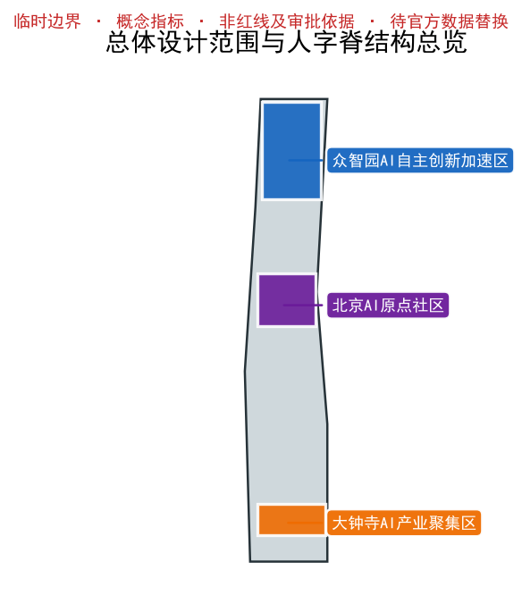
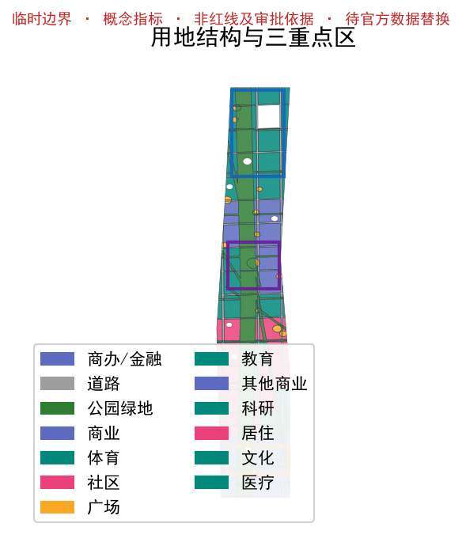
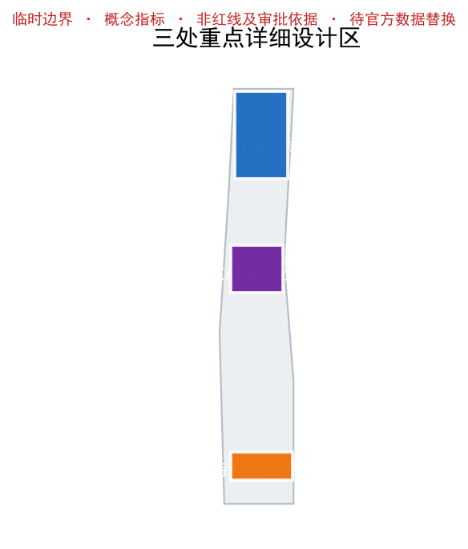
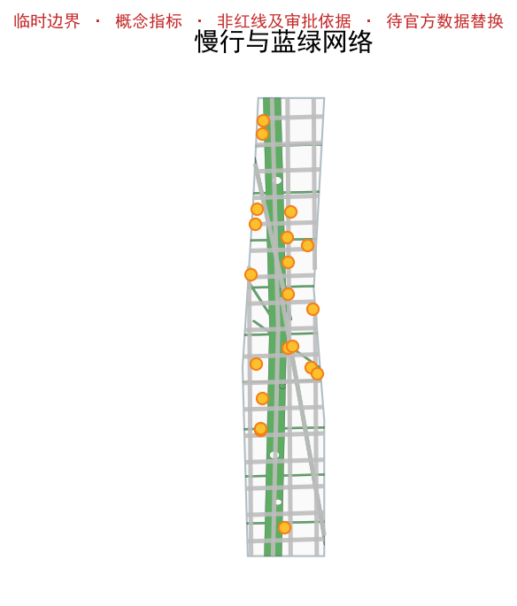
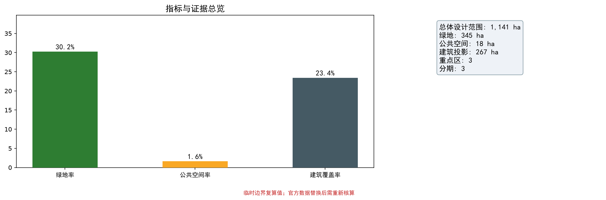
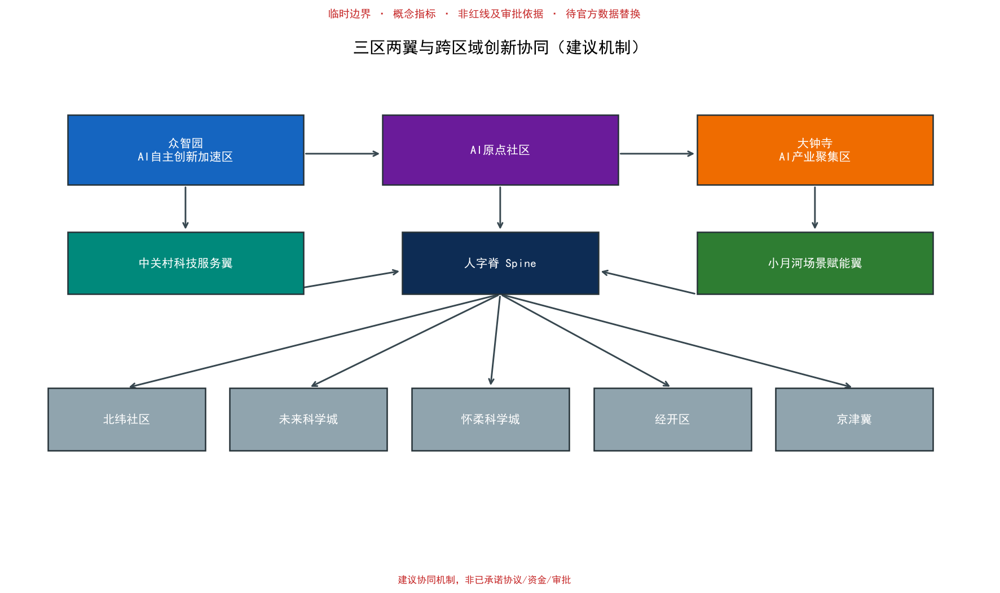
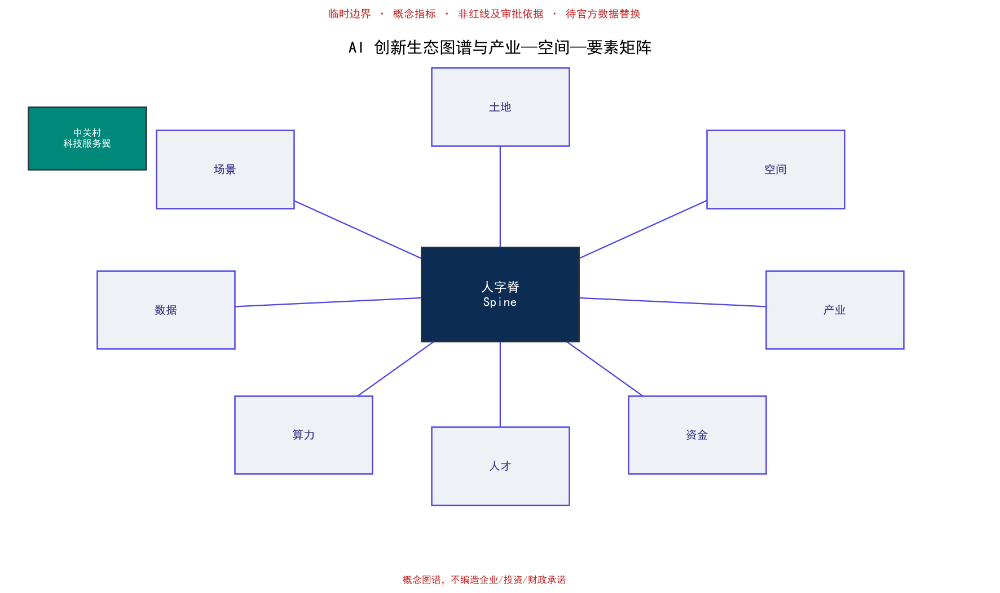
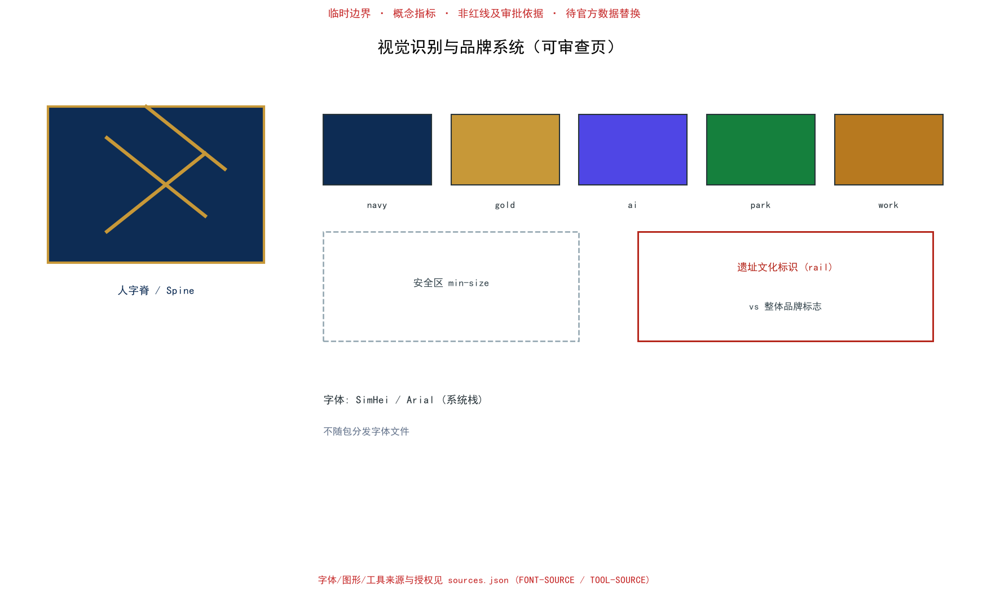

概念建议方案（正式阶段）· 临时边界 · 指标复算自 EPSG:4548

总体设计范围与人字脊结构总览

用地结构与三重点区

三处重点详细设计区

慢行与蓝绿网络

指标与证据总览

三区两翼与跨区域协同

AI 创新生态图谱与产业—空间—要素矩阵

视觉识别与品牌系统
43.6 km² AI 创新生态，三区两翼协同、未来城市形态。
11.4 km² 城市更新、用地结构、交通市政。
众智园、AI 原点社区、大钟寺。
花园型自主创新街区：国家平台、产业展示、低碳交往。
近校型成果转化街区：开源社区、人才服务、拆改留。
城市型智能经济街区：智能原生消费、商业服务。
342 个用地要素无缝无重叠覆盖总体设计范围；建筑为概念生成，更新项目以织补为主。
建筑密度概念 23.4%，由 building_footprint_area_sqm / site_area_sqm 复算；拆改留原则为保留遗址、织补建成、新建补齐。
脊线公园骑行主廊 + 自主/转化展线绿道构成连续慢行网络；23 条概念道路中心线为概念建议线位，非道路红线。
见隐私与无障碍章节：断点/过街/坡度/休息/导视/适老/夜间安全检查表（概念覆盖，待专业复核）。
脊线公园（约130m）+ 展线绿道（各约25m）+ 东西绿缝；绿地率 30.2%（概念建议）。
24 处场景节点沿脊线每约 0.8–1.2 km 一处，保障步行可达。
开发者/企业/高校成果发布与模型评测（T-01）
受控公共空间智能体测试（T-01）
公开数据+人工复核识别遗址公园断点（T-02）
居住/学习/消费/运动/社交连通
标准/可信评测/安全治理
清华/北大/中科院成果转化与路演
大钟寺数据资产与智能原生消费
分布式能源+端侧算力
铁路文脉+AI 新文化
开发者节/场景开放日
适老与无障碍群体连续可达
贡献者识别与知识沉淀
12 张场景卡（含 T-01/T-02/T-03 三个测试验证场景），完整字段见 scenario_cards.json。
主标志、最小尺寸、安全区、色彩（navy/gold/ai-indigo/park/work）、字体策略（SimHei/Arial 系统栈，不随包分发）、遗址文化标识与整体品牌标志区分、导视与活动应用样例。来源与授权见 sources.json（FONT-SOURCE / TOOL-SOURCE）。
中关村科技服务翼（IP/资本/标准）、小月河场景赋能翼（场景开放）；与北纬社区、未来科学城、怀柔科学城、经开区、京津冀的建议性要素流、场景验证、成果转化与责任接口。均为建议机制，非已承诺协议。
原点/众智园/大钟寺 MVP 落到具体空间类型；含阶段、建议角色、前置条件、资源类型、指标公式、验收方式与退出条件。role 为建议角色，非已承诺单位。详见 implementation_matrix.json。
年度活动体系、活动品牌、开发者社区、场景开放、公共地标运营、国际招引转化；运营收入/资源仅为情景建议。详见 agent_outputs_index.json / implementation_matrix.json。
禁止人脸/个体轨迹识别；聚合粒度与保存期限制；授权/访问/审计/申诉/人工复核/停用机制。概念阶段护栏，不以"未来再评估"替代。详见 privacy_guardrails.json。
路径断点/过街/坡度/休息/导视/适老/夜间安全，逐项提供专业复核方法；概念覆盖，不表述为已达标。详见 accessibility_checklist.json。
compliance_matrix.json 覆盖公告 1.3/1.4/1.5 与 agent.1-agent.6；standard_matrix.json 与 design_depth_matrix.json 证明专业标准与成果深度；agent_outputs_index.json 逐项追踪三大定位/五大功能/三区两翼与六 Agent 成果锚点。
deterministic validation、spatial review、visual packaging check 与 professional evidence review 须全部通过；当前边界状态：provisional geometry: PASS intake only，正式专业评分前须替换为官方多边形。
sources.json、agent_taskbook.json、data/processed/agent_fact_pack.md、standards/references；本页不加载 CDN、远程地图瓦片、外部脚本、外部字体、API 或 iframe。
待补控规、道路红线、权属、市政、文保与工程条件在 assumptions.json 列明，并在正文解释对设计结论的影响；边界为临时替代边界，指标为概念建议。